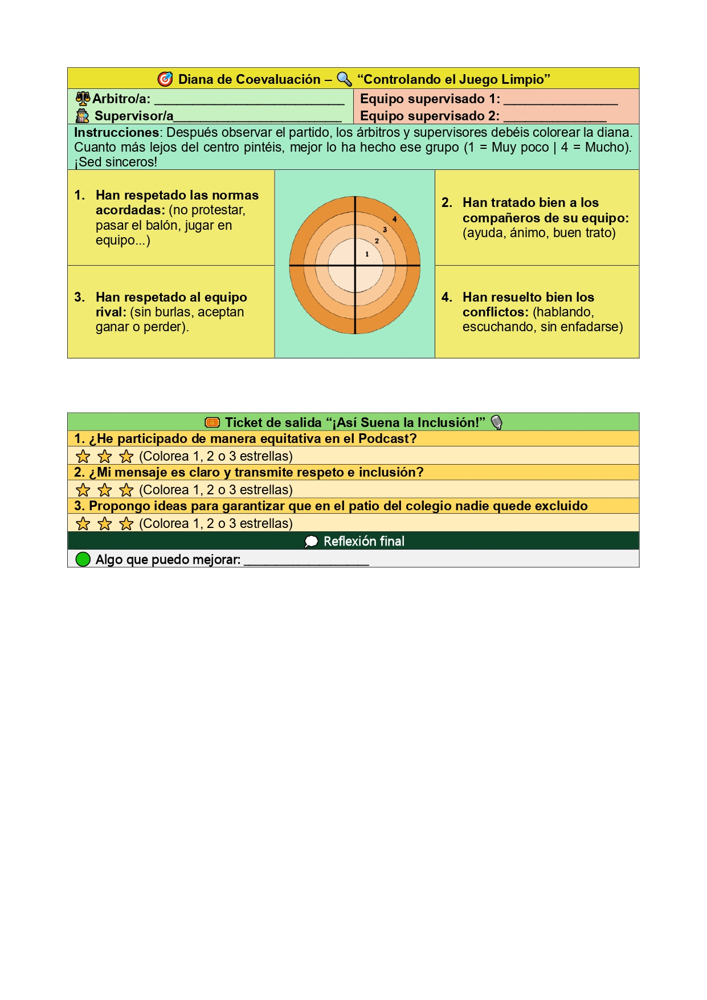

Momentos de evaluación
En esta situación de aprendizaje vais a realizar dos productos que serán evaluados a lo largo del proceso: una infografía con elemento interactivo y un podcast.
La infografía la trabajaréis durante las primeras sesiones. En la sesión 5 será el momento de entrega y evaluación. Antes de eso, tendréis tiempo en clase para buscar información, organizar ideas y diseñarla. También la revisaréis entre compañeros y compañeras utilizando una rúbrica sencilla, para poder mejorarla antes de entregarla. En la evaluación se tendrá en cuenta que la información sea clara, bien organizada y que incluya un elemento interactivo como un código QR o un enlace.
El segundo producto será un podcast, que trabajaréis en grupo a lo largo de varias sesiones. Lo iréis preparando poco a poco y lo terminaréis en la sesión 8, momento en el que se evaluará. Durante el proceso, iré revisando vuestros avances y os daré orientaciones para mejorar. En la evaluación final se valorará tanto el resultado final como el trabajo en equipo, la participación de todos y la calidad del mensaje que transmitáis.
Ambos trabajos formarán parte de vuestro portfolio digital (Teams), donde podréis ver vuestro progreso y también valorar vuestro propio trabajo y el de vuestros compañeros.
Rúbrica Infografía (CEV 3.2 "Respetos y consenso de normas")
| 4 Excelente | 3 Satisfactorio | 2 Mejorable | 1 Insuficiente | |
|---|---|---|---|---|
| Contenido | En la infografía aparecen recogidos con mucha claridad todos y cada uno de los conceptos e ideas claves del tema. (4) | En la infografía aparecen recogidas con bastante claridad todas o la mayor parte de las ideas claves del tema. (3) | En la infografía no aparecen recogidas todas las ideas claves del tema pero sí las más relevantes. (2) | En la infografía no se reflejan la mayor parte de las ideas fundamentales del tema. (1) |
| Patrón organizativo | Están presentes todos los elementos propios de una infografía (título, cuerpo, fuentes y créditos), existe un equilibrio perfecto entre el texto y la imagen. (4) | Están presentes todos los elementos propios de una infografía (título, cuerpo, fuentes y créditos), la información visual y textual están bastante bien equilibradas. (3) | Falta alguno de los elementos característicos de una infografía (título, cuerpo, fuentes o créditos) y/o no existe un buen equilibrio entre la información visual y textual. (2) | Solo presenta uno o dos de los elementos propios de una infografía (título, cuerpo, fuentes o créditos) y/o la información visual y textual no está equilibrada. (1) |
| Diseño | La información está distribuida de una manera visualmente muy atractiva, la combinación de colores es muy armónica y la tipografía empleada es legible y muy apropiada. (4) | La información está distribuida de una manera visualmente bastante atractiva, la combinación de colores es adecuada y la tipografía empleada es legible y apropiada. (3) | La información está distribuida de una manera visualmente poco atractiva, los colores no se combinan de una manera demasiado armónica y/o la tipografía no es la más apropiada. (2) | La información está distribuida de una visualmente nada atractiva, los colores no se combinan de manera armónica y/o la tipografía empleada es inapropiada y poco legible. (1) |
| Elementos visuales | Todas las imágenes empleadas tienen licencia CC, poseen unas dimensiones perfectas y apoyan con total claridad el mensaje que se quiere transmitir. (4) | Todas las imágenes empleadas tienen una licencia CC, poseen unas dimensiones adecuadas y apoyan con claridad el mensaje que se quiere transmitir. (3) | No todas las imágenes empleadas tienen licencia CC. Además, alguna de ellas no posee las dimensiones adecuadas y/o no apoya de una manera clara el mensaje que se quiere transmitir. (2) | La mayor parte de las imágenes no tienen licencia CC, no poseen unas dimensiones adecuadas y no se adecúan al mensaje que se quiere transmitir. (1) |
| Corrección lingüística | No se aprecian errores ortográficos, morfosintácticos ni de puntuación. (4) | Aparecen uno o dos errores ortográficos, morfosintácticos o de puntuación. (3) | Aparecen tres o cuatro errores ortográficos, morfosintácticos o de puntuación. (2) | Aparecen cinco o más errores ortográficos, morfosintácticos o de puntuación. (1) |
- Actividad
- Nombre
- Fecha
- Puntuación
- Notas
- Reiniciar
- Imprimir
- Aplicar
- Ventana nueva
Torneo (CEV 3.3 "Diálogo en la resolución de conflictos")
| Nivel 3 | Nivel 2 | Nivel 1 | |
|---|---|---|---|
| Escucha activa y respeto en el diálogo | Escucha a sus compañeros, respeta turnos de palabra y mantiene una actitud correcta en el diálogo. (1.50) | Escucha de forma irregular, respeta a veces los turnos de palabra, pero necesita recordatorios.(1.2) (1.75) | Interrumpe con frecuencia, no escucha a los demás y muestra poca disposición a dialogar. (2.5) |
| Resolución de conflictos durante el torneo | Evita resolver conflictos o responde de forma impulsiva sin dialogar. (1.50) | Intenta resolver conflictos, pero necesita ayuda del docente o no siempre lo hace de forma adecuada. (1.75) | Participa en la resolución de conflictos mediante el diálogo y acepta acuerdos del grupo. (2.5) |
| Actitud ante acuerdos y normas del torneo | No respeta acuerdos ni normas establecidas en el torneo. (1.50) | Respeta algunas normas, pero le cuesta aceptar acuerdos si no está de acuerdo. (1.75) | Respeta las normas y acepta los acuerdos establecidos por el grupo. (2.5) |
- Actividad
- Nombre
- Fecha
- Puntuación
- Notas
- Reiniciar
- Imprimir
- Aplicar
- Ventana nueva
Podcast (CEV 4.2 "DEPORTE Y ANÁLIS DE ESTERIOTIPOS")
| 4 Excelente | 3 Satisfactorio | 2 Mejorable | 1 Insuficiente | |
|---|---|---|---|---|
| Lectura del texto | Lee el texto de manera expresiva y cuidando los rasgos propios de la oralidad (tono, ritmo, entonación, énfasis...). (4) | Lee el texto de manera expresiva y cuidando la mayoría de los rasgos propios de la oralidad (tono, ritmo, entonación, énfasis...). (3) | En la lectura del texto no tiene en cuenta todos los rasgos propios de la oralidad (tono, ritmo, entonación, énfasis...). (2) | En la lectura del texto no tiene en cuenta ninguno de los rasgos propios de la oralidad (tono, ritmo, entonación, énfasis...). (1) |
| Análisis y comentario del texto | Demuestra comprender en profundidad el texto, la intención del autor, y es capaz de relacionarlo fácilmente con sus propias emociones y experiencias. (4) | Demuestra comprender las principales ideas y sentimientos expresados en el texto, y es capaz de encontrar relaciones con sus propias emociones y experiencias. (3) | Demuestra comprender algunas de las ideas y sentimientos expresados en el texto, y es capaz de encontrar algunas relaciones con sus propias emociones y experiencias. (2) | Demuestra no comprender la esencia del texto ni la intención del autor. No es capaz de relacionarlo con sus propias emociones y experiencias. (1) |
| Manejo de las herramientas digitales de grabación de audio | Usa las herramientas digitales sin ningún problema y aprovecha todas las posibilidades que ofrecen. (4) | Usa las herramientas digitales sin grandes problemas y aprovecha bastante bien las posibilidades que ofrecen. (3) | Usa las herramientas digitales con ayuda y no aprovecha todas las posibilidades que ofrecen. (2) | Tiene bastantes problemas en el uso de las herramientas digitales y no aprovecha sus posibilidades. (1) |
| Asunción de tareas | Asume con responsabilidad todas las tareas que le corresponden en la elaboración del pódcast. (4) | Asume con responsabilidad casi todas las tareas que le corresponden en la elaboración del pódcast. (3) | Asume sólo algunas de las tareas que le corresponden en la elaboración del pódcast. (2) | No asume con responsabilidad las tareas que le corresponden en la elaboración del pódcast. (1) |
| Participación en el trabajo en equipo | Participa activamente en el equipo aportando ideas y ayudando, cuando lo necesitan, al resto de sus compañeros/as. (4) | Participa bastante activamente en el equipo aportando ideas y ayudando, casi siempre al resto de sus compañeros/as. (3) | Participa por lo general en el equipo y, en ocasiones, ayuda al resto de sus compañeros/as. (2) | Participa poco en el equipo y ofrece poca ayuda al resto de sus compañeros/as. (1) |
- Actividad
- Nombre
- Fecha
- Puntuación
- Notas
- Reiniciar
- Imprimir
- Aplicar
- Ventana nueva
Instrumentos de auto y co-evaluación
